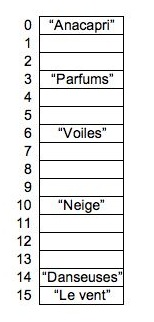

|
Answer all of these on separate sheets of paper. Put your name and your CS email address on each sheet. |
|
|
 |
|
|
typedef struct {
Jval key;
Jval val;
Dllist children;
} Tree;
|
Each node may have any number of children.
Each node in children is
a jval whose .v field is a (Tree *).
Write the procedure print_height(), which has the following prototype:
void print_height(Tree *t);
Print_height() should print the height of the given tree on standard output, right justfied and padded to 5 spaces. Note, the tree in Question 2 has a height of four, and the tree in Question 5 has a height of five.
#include "jval.h"
typedef struct dllist {
struct dllist *flink;
struct dllist *blink;
Jval val;
} *Dllist;
extern Dllist new_dllist();
extern void free_dllist(Dllist);
extern void dll_append(Dllist, Jval);
extern void dll_prepend(Dllist, Jval);
extern void dll_insert_b(Dllist, Jval);
extern void dll_insert_a(Dllist, Jval);
extern void dll_delete_node(Dllist);
extern int dll_empty(Dllist);
#define dll_traverse(ptr, list) \
for (ptr = list->flink; ptr != list; ptr = ptr->flink)
#define dll_rtraverse(ptr, list) \
for (ptr = list->blink; ptr != list; ptr = ptr->blink)